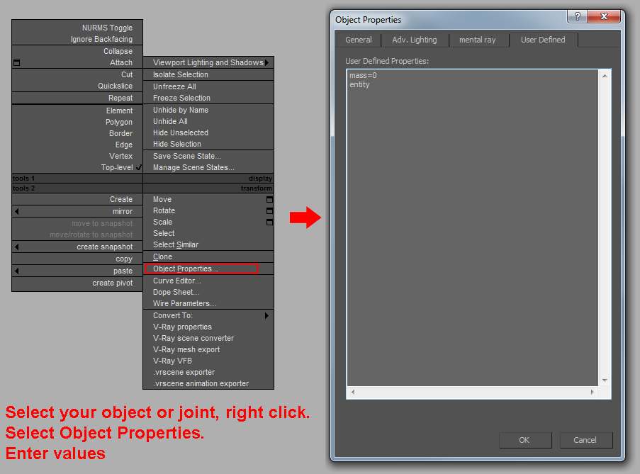
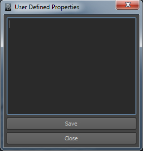

Overview
Sections
A user-defined property (UDP) is a property that is defined when you construct a message flow by using the Message Flow editor. The advantage of UDP's is that their values can be changed by operational staff at deployment and run time, without having to change the code at the message node level.
In CryENGINE, UDP's are used for affecting and changing the Physics Properties for static objects and especially breakable assets!
Setup in DCC Tools
UDP Setup in 3d max

UDP Setup in Maya
Click on the icon labelled "UDP" to open up the menu.

A few notes for Maya users:
- UDP strings must be assigned to a node ending with the name "_group" that has not been transformed relative to the parent "cryexportnode"
- If this is deviated, the engine will try to fit the contents of mesh data below the group node to the UDP assigned primitive. In most cases this fitting works but it should be noted that it isn't perfect and at times can result in unpredictable behavior.
- For every UDP primitive used; each should have its own _group node.
- Cylinders should be used for representing capsules since Maya does not feature them as an option by default. To display cylinders as capsules, enable 'Round Cap' in the input parameters.
- For characters the UDP strings must be assigned to the joint of the desired physics proxy being used.
Physics Properties for Object properties/UDP
CGF/CGA/CHR
| Properties | Applied to | Description |
|---|---|---|
| no_explosion_occlusion | phys proxy | Will allow the force/damage of an explosion to penetrate through the phys proxy. This could be used for example on the proxy of a chain-link fence, so that a grenade exploding near the fence will damage characters on the opposite side of the fence. |
| other_rendermesh | phys proxy | (Mostly obsolete now) - This would be required if the phys proxy is a sibling of the rendermesh. Proxies should always be children of the rendermesh however, in which case other_rendermesh is not required. |
| colltype_player | phys proxy | Note: unlike other properties, this has to be the node's name, not UDP. Its effects are:
In Maya you must use this setup:
|
| box | phys proxy | Force this proxy to be a Box primitive in the engine. |
| cylinder | phys proxy | Force this proxy to be a Cylinder primitive in the engine. |
| capsule | phys proxy | Force this proxy to be a Capsule primitive in the engine. |
| sphere | phys proxy | Force this proxy to be a Sphere primitive in the engine. |
| notaprim | phys proxy | Force the engine NOT to convert this proxy to a primitive (for example if the proxy is already naturally box-shaped). This is especially important for deformable objects - the skeleton being a primitive will cause a crash! |
| no_hit_refinement | render mesh | Do not perform hit-refinement at the rendermesh level – only use the phys proxy's surface type (but decals/effects will still be projected back to the rendermesh). If this is used, then the rendermesh doesn't have to have a surface type assigned – only the phys proxy material(s) should have surface types. By default, hit-refinement on the rendermesh is always performed, unless this string is set. Another way of having more precise ray traces is to have a dedicated 'no-collide' or 'obstruct' proxy. |
| dynamic | rendermesh (physicalized) | This is a special-case string for dynamically breakable meshes (i.e. glass) – this string flags the object as "dynamically breakable". However this string is not required on Glass, Trees, or Cloth, as these are already flagged automatically by the engine (through surface-type system). This should only be used on new types of dynamically-breakable meshes. |
Jointed (pre-broken) Breakables
| UDP String | UDP is Applied to | Description |
|---|---|---|
| entity | rendermesh | If the render geometry properties include "entity", the object will not fade out after being disconnected from the main object. |
| gameplay_critical | joint node | Joints in the entire entity will break, even if jointed breaking is disabled overall. For example, if a level uses many breakable objects, but has disabled breaking (they don't want them to break), but they <do> want certain specific objects to break for gameplay reasons -- then only those objects with gameplay_critical will be breakable. |
| player_can_break | joint node | Joints in the entire breakable entity can be broken by the player bumping into them. |
| childof_unbroken 00 childof_unbroken 01 etc. | ** OBJECT NAMES, NOT UDP ** | ** This is a naming convention for the object mesh piece names, NOT UDP strings ** unbroken refers to the name of the full unbroken version of the object (does not have to be called "unbroken", but whatever name you have given to your unbroken mesh) ** There must be a space between the name (i.e. "unbroken") and the incremental numbers! If the broken piece meshes are named with this naming convention, then these broken pieces will remain hidden by the renderer (only the full unbroken mesh will be rendered) until the first breakage occurs then the unbroken mesh will be hidden and swapped for all the broken pieces. |
| mass=value | rendermesh | Mass defines the weight of an object based on real world physics in kg. mass=0 sets the object to "unmovable". This is used on your base piece that will never move, e.g: on the basement of a house for example or the sign pole which should not be movable and always stay in the original position. When used in brushes and Geom Entities, this is the remaining part's mass. When used in regular Entities, all parts masses are scaled so that their total mass gives the mass specified in the entity properties. CAUTION - You must either define this value or density to ensure the simulation is working correctly. |
| density=value | rendermesh | The engine automatically calculates the mass for an object based on the density and the bounding box of an object. Can be used alternatively to mass. |
| pieces=value | rendermesh | Instead of disconnecting the piece when the joint is broken, it will instantly disappear spawning a particle effect depending on the surfacetype of the proxy. |
| limit=value | $joint node | Limit is a general value for several different kind of forces applied to the joint. It contains a combination of the values below. ATTENTION! - This value needs to be defined, otherwise the simulation will not work correctly. Crysis Example values: 100 - 500 can be broken by a bullet; 10000 can be broken by the impact of a driving vehicle or a big explosion. |
| bend=value | $joint node | Maximum torque around an axis perpendicular to the normal. |
| twist=value | $joint node | Maximum torque around the normal. |
| pull=value | $joint node | Maximum force applied to the joint's 1st object against the joint normal (the parts are "pulled together" as a reaction to external forces pulling them apart). |
| push=value | $joint node | Maximum force applied to the joint's 1st object (i.e. the one whose name is listed first in the joint's name, or if the names were not specified, the object the joint's z axis points towards) along the joint normal; joint normal is the joint's z axis, so for this value to actually be "push apart" (as a reaction to external forces pressing the parts together), this axis must be directed inside the 1st object. |
| shift=value | $joint node | Maximum force in the direction perpendicular to normal. |
| constraint_limit=value | $joint node | Force limit for the newly created constraint, is checked when the constraint hits a rotation limit and is being pushed further. |
| constraint_minang=value | $joint node | Rotation limits for the constraint (the interpretation is the same as in standalone constraints). The default is no limits. |
| consrtaint_maxang=value | $joint node | Rotation limits for the constraint (the interpretation is the same as in standalone constraints). The default is no limits. |
| constraint_damping=value | $joint node | Angular damping (default 0). |
| consrtaint_collides=value | $joint node | Whether the constraint parts will ignore collisions with each other (default 1). |
Deformables
| UDP String | Object Type | UDP is Applied to: | Description |
|---|---|---|---|
| stiffness=value | Deformable | skeleton mesh | Resilience to bending and shearing (default 10). |
| hardness=value | Deformable | skeleton mesh | Resilience to stretching (default 10). |
| max_stretch=value | Deformable | skeleton mesh | If any edge is stretched more than that, it's length is re-enforced. max_stretch = 0.3 means stretched to 130% of its original length (or by 30% wrt to its original length). Default 0.01. |
| max_impulse=value | Deformable | skeleton mesh | Upper limit on all applied impulses. Default skeleton's mass*100. |
| skin_dist=value | Deformable | skeleton mesh | Sphere radius in skinning assignment. Default is the minimum of the main mesh's bounding box's dimensions. |
| thickness=value | Deformable | skeleton mesh | Sets the collision thickness for the skeleton. The skeleton collides as a cloth object, i.e. it has virtual spheres with this radius around each vertex, and it has less priority than the geometries it collides with (it'll un-project itself unconditionally from them). It collides with static and rigid body objects only. It will collide with parts of the same entity it belongs to, except the one it skins (this way it's possible to set up safety shells inside the object to prevent excessive deformations). Setting thickness to 0 disables all collisions. |
| notaprim | Deformable | skeleton mesh | A general physics proxy parameter, it keeps the physics mesh from being turned into a primitive (box, cylinder). This is especially important for deformable objects - the skeleton being a primitive will cause a crash! |
| explosion_scale=value | Deformable | skeleton mesh | Used to scale down the effect of explosions on the deformable. This lets you have visible deformations from bullet impacts, but without vastly distorting the object too far with explosions. |